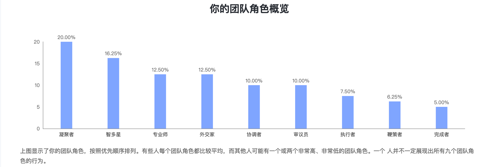

贝尔宾团队角色共有9种角色，资料来自智库wiki：
智多星PL（Plant）
智多星创造力强，充当创新者和发明者的角色。他们为团队的发展和完善出谋划策。通常他们更倾向于与其他团队成员保持距离，运用自己的想象力独立完成任务，标新立异。他们对于外界的批判和赞扬反应强烈，持保守态度。他们的想法总是很激进，并且可能会忽略实施的可能性。 他们是独立的、聪明的、充满原创思想的，但是他们可能不善于与那些气场不同的人交流。
外交家RI（Resource Investigator）
外交家是热情的、行动力强的、外向的人。无论公司内外，他们都善于和人打交道。他们与生俱来是谈判的高手，并且善于挖掘新的机遇、发展人际关系。虽然他们并没有很多原创想法，但是在听取和发展别人想法的时候，外交家效率极高。就像他们的名字一样，他们善于发掘那些可以获得并利用的资源。由于他们性格开朗外向，所以无论到哪里都会受到热烈欢迎。 外交家为人随和，好奇心强，乐于在任何新事物中寻找潜在的可能性。然而，如果没有他人的持续激励，他们的热情会很快消退。
审议员ME（Monitor Evaluator）
审议员是态度严肃的、谨慎理智的人，他们有着与生俱来对过份热情的免疫力。他们倾向于三思而后行，做决定较慢。通常他们非常具有批判性思维。他们善于在考虑周全之后作出明智的决定。具有审议员特征的人所作出的决定，基本上是不会错的。
协调者CO（Co-ordinator）
协调者最突出的特征就是他们能够凝聚团队的力量向共同的目标努力。成熟、值得信赖并且自信，都是他们的代名词。在人际交往中，他们能够很快识别对方的长处所在，并且通过知人善用来达成团队目标。虽然协调者并不需是团队中最聪明的成员，但是他们拥有远见卓识，并且能够获得团队成员的尊重。
鞭策者SH（Shaper）
鞭策者是充满干劲的、精力充沛的、渴望成就的人。通常，他们非常有进取心，性格外向，拥有强大驱动力。他们勇于挑战他人，并且关心最终是否胜利。他们喜欢领导并激励他人采取行动。在行动中如遇困难，他们会积极找出解决办法。他们是顽强又自信的，在面对任何失望和挫折时，他们倾向于显示出强烈的情绪反应。鞭策者对人际不敏感，好争辩，可能缺少对人际交往的理解。这些特征决定了他们是团队中最具竞争性的角色。
凝聚者TW（Teamworker）
凝聚者是在团队中给予最大支持的成员。他们性格温和，擅长人际交往并关心他人。他们灵活性强，适应不同环境和人的能力非常强。凝聚者观察力强，善于交际。作为最佳倾听者的他们通常在团队中倍受欢迎。他们在工作上非常敏感，但是在面对危机时，他们往往优柔寡断。
执行者IMP（Implementer）
执行者是实用主义者，有强烈的自我控制力及纪律意识。他们偏好努力工作，并系统化地解决问题。广而言之，执行者是典型的将自身利益与忠诚与团队紧密相连、较少关注个人诉求的角色。然而，执行者或许会因缺乏主动而显得一板一眼。
完成者CF（Completer Finisher）
完成者是坚持不懈的、注重细节的。他们不太会去做他们认为完成不了的任何事。他们由内部焦虑所激励，但表面看起来很从容。一般来说，大多数完成者都性格内向，并不太需要外部的激励或推动。他们无法容忍那些态度随意的人。完成者并不喜欢委派他人，而是更偏好自己来完成所有的任务。
专业师SP（Specialist）
专业师是专注的，他们会为自己获得专业技能和知识而感到骄傲。他们首要专注于维持自己的专业度以及对专业知识的不断探究之上。然而由于专业师们将绝大多数注意力都集中在自己的领域，因此他们对其他领域所知甚少。最终，他们成为了只对专一领域有贡献的专家。但是很少有人能够一心一意钻研，或有成为一流专家的才能。
我的角色：
